4. เดินเรื่องทุกฉาก
Lacroa (ลาครัว) — เริ่มเกม
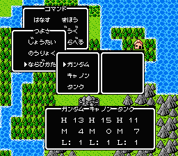
เมนูสำรวจตัวจริงในเกม (Level 1) — เปิดได้ด้วยปุ่ม A ระหว่างเดินบนแผนที่/เมือง
เลือกความเร็วข้อความ: Fast (はやい) / Normal (ふつう) / Slow (おそい)
แล้วตั้งชื่อ จากนั้นเลือกเพศ Male (おとこ) / Female (おんな)
GM Sniper (ジムスナイパー) มารับ Knight Gundam ไปเฝ้าราชา ฟังเรื่องเจ้าหญิงถูกลักพาตัว
เราสัญญาจะปราบ Zeon และพาเจ้าหญิงกลับ ราชาให้พาผู้ช่วยไปด้วยคือ Guncannon (ガンキャノン) และ Guntank (ガンタンク)
รับ 500 Gold จากชายที่เดินอยู่ใต้บัลลังก์ · คุยชาวเมืองจะรู้เรื่อง Lithograph พลังลึกลับ และสมบัติศักดิ์สิทธิ์ของกันดั้ม 3 ชิ้น ·
หมาชั้น 3 ของปราสาทชอบของที่เป็นของเจ้าหญิง · หมู่บ้าน Sento (セントー) อยู่ทางเหนือ → ออกจากปราสาทไปทางเหนือ
Sento (เซนโต)
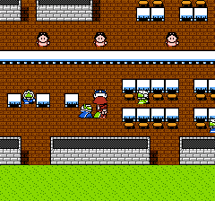
ภายในอาคารเมือง Sento (ตัวอย่างจากเกมจริง)
ซื้ออุปกรณ์ให้ปาร์ตี้ เงินน้อย เน้นให้ Gundam ก่อน (เอาเขาไว้แถวหน้าเพื่อดึงการโจมตี) ·
ร้าน bargain ปลายบนกลางเมือง ยังไม่ขายอะไร แต่ของหายากที่เราขาย/ทิ้งภายหลังจะมาโผล่ขายที่นี่ · มีตู้ Carddass ในร้านค้า
- รับ Princess' Pendant (ひめのペンダント) จากผู้หญิงมุมขวาบนของโรงแรม (宿) — ไอเทมสำคัญมาก เอาไปโชว์หมาที่ Lacroa แล้วมันจะเดินตาม (ดูเหมือนไม่มีอะไรเกิด แต่จำเป็นภายหลัง)
- รับ Spending Notebook (こずかいちょう) จากคนด้านขวาเมือง — ตั้งเป้าจำนวนเงิน พอถึงเป้าจะมีข้อความแจ้ง
- รับ สมุดเก็บการ์ด จากอีกคนด้านขวาเมือง — เมนู カードダス จะโผล่ให้ดูการ์ด
- ซื้อ ประกัน 10 Gold จากหญิงด้านขวาเคาน์เตอร์โรงแรม (ซื้อใหม่ทุกครั้งหลังปาร์ตี้ตายยกทีม)
ทางตะวันตกของ Sento
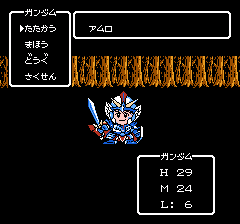
ฉากต่อสู้กับ Amuro ตัวจริงในเกม
ออกจาก Sento แล้ว Guncannon หายตัวไป Guntank ไปตามหา เหลือเราคนเดียว — เลเวลอัป 1–2 ครั้งก่อนไปไกล
ทางตะวันตกมีสะพาน พอจะข้าม Amuro (アムロ) เข้าใจผิดว่าเราเป็นอัศวิน Zeon แล้วโจมตี
บอส: Amuro (アムロ) — 60 EXP / 50 Gold
ไม่ต้องมีกลยุทธ์ ตีเราราว 1 HP/เทิร์น มี HP 20–25
ชนะแล้ว Amuro ขอโทษ บอกว่าเป็นอัศวิน Union แล้วเข้าร่วมช่วยปราบ Satan Gundam · Guntank กลับมาแต่ยังหา Guncannon ไม่เจอ · ไปทางเหนือของสะพานสู่หมู่บ้าน Zan (ザーン)
Zan (ซาน)
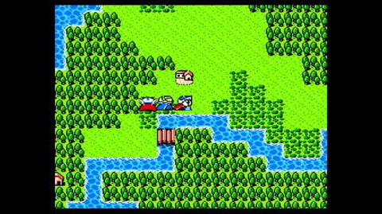
เดินทางเข้าหมู่บ้าน Zan (ตัวอย่างจากเกมจริง)
รู้ข่าว: อัศวินชื่อ Sayla (セイラ) เข้าไปในถ้ำทางตะวันออกแล้วไม่กลับ มีสไลม์น่ากลัวในถ้ำ ·
หมู่บ้าน Augusta (オーガスタ) อยู่ทางเหนือ · ปราชญ์อยู่บ้านทางตะวันตก · มี Carddass Island อยู่ที่ไหนสักแห่ง
เด็กปลายเหนือเมืองท้าเล่น Carddass ชนะแล้วบอก “มีคนอยู่ทางขวาฉัน” แล้วหายไป → เดินไปทางขวาจากจุดนั้น เจออัศวินชุดแดง = Guncannon กลับเข้าปาร์ตี้ · จากนั้นไปทางตะวันออกสู่ถ้ำ
ถ้ำตะวันออกของ Zan [sec4a]
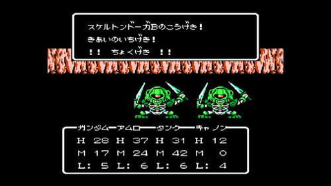
ต่อสู้ Skeleton Dooga ในถ้ำ (ตัวอย่างจากเกมจริง)
สมบัติ: Wood Shield, Magic Rope, Magic Square Mat, Tactics Scroll, Copper Sword, Lithograph Fragment
สำรวจถ้ำไปสักพักเจอสไลม์ คุยแล้วมันเคลื่อนหนี “เอ๊ะ? มันพยายามจะบอกอะไร?” ตามไปมันพาไปหีบ → เปิดได้ Lithograph Fragment (ยังไม่รู้ว่าใช้ทำอะไร) ออกจากถ้ำ
ไปหาปราชญ์ในบ้านทางตะวันตกของ Zan เขาสนใจสไลม์ตัวนั้น ให้ Hero's Tears (ゆうしゃのなみだ) บอกให้เอากลับไปที่ถ้ำ แล้วจะมีอะไรเกิดขึ้น
กลับถ้ำ คุยสไลม์ → ใช้ Hero's Tears มันกลายเป็นคน = Sayla (セイラ) เธอออกเดินทางตามหาพี่ชาย แต่ถูก Zeon จับ ตอนนี้อยากร่วมสู้ · ปาร์ตี้เต็มแล้ว สลับตัวที่ปราสาท Lacroa (ใส่ Sayla ได้เลย) · จากนั้นไปทางเหนือสู่ Augusta
Augusta (ออกัสตา)
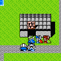
ตัวอย่างฉากเมืองในเกมจริง — ทุกเมืองใช้กราฟิกอาคาร/NPC ในสไตล์เดียวกันนี้
ถ้ามี Sayla ในปาร์ตี้แล้วไปกลางเมือง จะมีฉากพบ Shaw / Char (シャア) พี่ชายที่พลัดพรากของ Sayla แต่กว่าจะรู้ตัวเขาก็เดินจากไปแล้ว
ข่าวลือ: Pegasus ที่เฉพาะวีรบุรุษหัวใจแท้จริงถึงจะขี่ได้ · โจร 3 คนวนเวียนในเมือง ·
Gallop Tower (ギャロップのとう) อยู่ทางเหนือ มีโล่ในตำนาน · หมอดูบอกให้พา Sayla ไป Gallop Tower
พา Sayla ไปทางเหนือสู่หอคอย
Gallop Tower [sec4b]
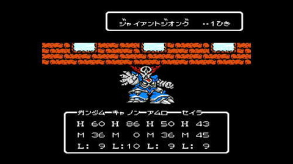
ฉากต่อสู้บอส Giant Zeongu ตัวจริงในเกม
สมบัติ: Tactics Scroll, Leather Hat, Ointment, Thief Knife
ที่ทางเข้า Ramba Ral (ランバ ラル) มาขวาง “เดี๋ยว! ผ่านไปไม่ได้” Sayla สั่งให้หลบ Ramba Ral บอกไม่สู้กับผู้หญิง แล้วปล่อยผ่าน
ระหว่างปีนขึ้นยอด แนะนำหนีศัตรู Dom (ドム) และ Zeongu (ジイオング) เพราะมีเวทดาเมจหนักทั้งทีม · บนยอดได้ Thief Knife (とうぞくのナイフ) อาวุธดีมาก ตีหลายครั้งต่อเทิร์น · ตกหลุมลงไปเจอบอส
บอส: Giant Zeongu (ジャイアントジオング) — 324 EXP / 87 Gold
โจมตีอ่อน น่าจะง่ายมาก แต่มีเวทโดนทั้งทีม 25–30 HP หวังว่าโชคดีมันไม่ค่อยใช้
ชนะแล้วได้ Strength Shield (ちからのたて) · ออกจากหอคอยอัตโนมัติ แล้วมีคนมาแย่งโล่ไป · GM Sniper บอกปล่อยให้เขาจัดการ นัดเจอที่เมือง Hatte (ハッテ) ทางตะวันออก ที่นั่นชาวเมืองเดือดร้อน ให้ไปช่วย
Hatte (ฮัตเตะ)
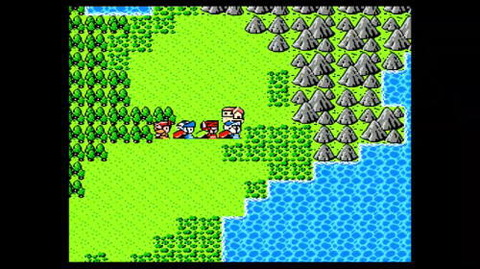
ระหว่างเดินทางสู่ Hatte (ตัวอย่างจากเกมจริง)
ชาวเมืองถูกโจรรังควาน · หมู่บ้าน Munzo อยู่ทางตะวันออกแต่ทางถูกปิดด้วยพลังเวทลึกลับ ·
เข้าบ้านมุมขวาบน คุยผู้เฒ่าหมู่บ้าน → หัวหน้าโจรอยู่ Odessa (オデッサ) ลูกสาวผู้เฒ่าไปที่นั่นเพื่อเกลี้ยกล่อม ขอให้เราไปดูลูกสาวเขา → ไปทางตะวันตกเฉียงเหนือสู่ Odessa
Odessa (โอเดสซา)
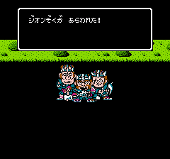
Black Tri-Stars ปรากฏตัว (ตัวอย่างจากเกมจริง)
โจรยึดเมือง คนหนึ่งบอกเจ้าหญิง Fraw น่าจะถูกพาผ่านทางไปทางตะวันออก · เจอลูกสาวผู้เฒ่ามุมซ้ายบนเมือง คุยแล้วโจรชุดดำ 3 คน (ที่แย่งโล่ไป) มาเริ่มสู้
บอส: Black Tri-Stars (くろい３れんせい) — 400 EXP / 482 Gold
โจมตีอ่อนแต่ตี 3 ครั้ง/เทิร์น มีโอกาสคริติคอลสูงขึ้น · ป้องกันแข็ง → ใช้เวทโจมตีได้ผลดีกว่า
ชนะแล้วโจรสำนึกผิด ขอโทษ · ไปเอา Strength Shield ที่บ้านโจรได้ · ลูกสาวผู้เฒ่าขอบคุณ ให้ไปเยี่ยมที่บ้านเธอใน Hatte · ในบ้านกลางเมืองเจอ GM Sniper ถูกจับ เขาบอกโล่อยู่มุมขวาห้อง → ค้นมุมขวาบนได้ Strength Shield
กลับ Hatte คุยผู้เฒ่า → ได้ Passed Down Salt (かほうのしお) เป็นการตอบแทน
ถ้ำตะวันออกของ Odessa [sec4c]
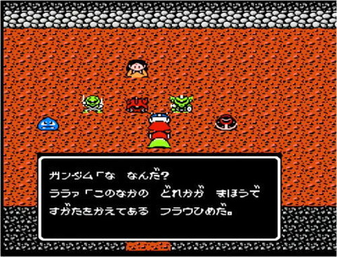
Lalah เผยว่าเจ้าหญิงถูกแปลงร่างซ่อนอยู่ในหมู่มอนสเตอร์ (ตัวอย่างจากเกมจริง)
สมบัติ: Tactics Scroll
ไปทางตะวันออกจาก Odessa สู่ถ้ำที่เคยผ่านไม่ได้ โรยเกลือที่เพิ่งได้ → ปลดคำสาปที่ปิดทาง
ในถ้ำเจอ Lalah (ララァ) มอนสเตอร์ 5 ตัวโผล่ เธอบอกหนึ่งในนั้นคือเจ้าหญิงที่ถูกแปลงร่าง ต้องฆ่าทีละตัวแล้วเดาว่าตัวไหน
⚠️ สำคัญ: ถ้ายังไม่ได้โชว์ Princess' Pendant ให้หมาชั้น 3 ของปราสาท Lacroa → พอฆ่าตัวที่ 4 จะเป็นเจ้าหญิง แล้วเราฆ่าเธอตาย (เล่นต่อได้แต่ไม่รู้ผลลัพธ์) ·
วิธีที่ถูก: โชว์ Pendant ให้หมาก่อน แล้วหลังฆ่ามอนสเตอร์ 3 ตัว หมาจะโผล่มาวิ่งไปหาเจ้าหญิงตัวจริง เธอถูกปลดปล่อย และบอกว่าจะกลับปราสาท มีของให้เรา
กลับปราสาทคุยเจ้าหญิงในห้องบัลลังก์ → ได้ Charm (おまもり) (ลดอัตราเจอมอนสเตอร์ครึ่งหนึ่ง ใช้ได้ไม่จำกัด) · กลับถ้ำที่ช่วยเจ้าหญิง ทางใหม่เปิด → ออกไปเข้าหมู่บ้าน Munzo (ムンゾ)
Munzo (มุนโซ)
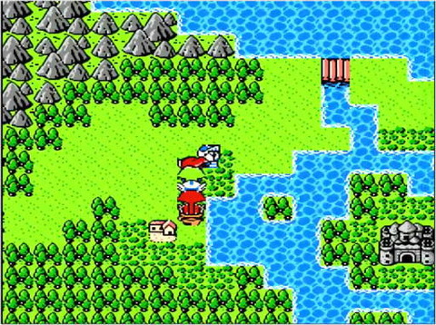
มองเห็นปราสาท Satan Gundam ทางตะวันออกของ Munzo (ตัวอย่างจากเกมจริง)
ปราสาท Satan Gundam มองเห็นได้ทางตะวันออก แต่ไม่มีสะพานไป · คุย Sleggar (ชุดน้ำเงิน) มุมซ้ายบนเมือง เขาอยากให้ท้าสู้ 50 Gold ชนะได้ 600 Gold
บอส: Sleggar (スレッガー) — 800 EXP / 500 Gold
สู้ง่าย · ชนะเขา 3 ครั้ง → เข้าร่วมช่วยปราบ Satan Gundam
พร้อมแล้วคุยชายชราในบ้านทางตะวันออกของ Munzo → เทเลพอร์ตไปเกาะที่มีปราสาท
Satan Gundam Castle [sec4d]
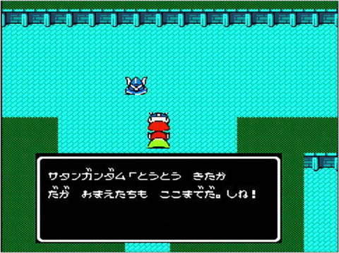
Satan Gundam ทักทายก่อนสู้ ในปราสาท (ตัวอย่างจากเกมจริง)
สมบัติ: Iron Sword, Wood Shield, Iron Shield, Ointment, Iron Helmet
บอส: Lalah (ララァ)
ค่อนข้างยาก เธอมีเวทดาเมจทั้งทีมแรง — ให้จอมเวทร่ายฮีลต้นเทิร์นทุกเทิร์นเผื่อไว้ · ป้องกันต่ำ ตัวแรงตีได้เยอะ Thief Knife ดีมาก
บอส: Satan Gundam (サタンガンダム) — 1040 EXP / 0 Gold
ทำให้เราสลบ (きぜつ) ต้องรอหลายเทิร์นถึงจะตีได้ · ถ้ามี Beat (ビット) ร่ายใส่ให้มันสลบได้ → ยิ่งง่าย
บอส: Black Dragon (ブラックドラゴン) — 2080 EXP / 1004 Gold
ยากมาก เวทดาเมจทั้งทีมแรงมาก · ต้องดวงช่วยให้มันไม่ร่ายเกิน 1 ครั้ง · จอมเวทร่ายฮีลต้นเทิร์นทุกเทิร์นเพื่อให้ตัวแรงอยู่รอดปิดเกม · เลเวลตอนผ่านราว 11–12
พักเรื่อง (Interlude)
Satan Gundam ล้ม ปาร์ตี้ฉลอง GM Sniper ให้กลับ Lacroa → เจอปราสาทพังยับ · Nemo บอกมียักษ์โผล่มาจากไหนไม่รู้แล้วทุบ สงสัย Zeon · ราชาปลอดภัยแต่ช็อกและสับสน บอกเจ้าหญิงอยู่ Sento (โชคดีที่อยู่ที่นั่นตอนเกิดเหตุ)
ไป Sento เจ้าหญิงเดินอยู่ปลายเหนือเมือง คุยบอกข่าวปราสาทถูกโจมตี เธอถามว่าราชาปลอดภัยไหม ตอบ “ใช่” · ยักษ์ก็มาเมืองนี้แต่เสียหายไม่มาก แต่บ้าน GM Henson พัง (มุมตะวันตกเฉียงใต้เมือง)
ช่องเขาทางใต้ของ Lacroa เปิดออก (ยักษ์เดินไปทางนั้น) → ไปทางใต้ · ตอนนี้ Nemo (ネモ) ใช้งานได้แล้ว
ทางใต้ของ Lacroa
ไปทางใต้แล้วเลี้ยวตะวันตกเข้าทะเลทราย เจอบ้านเล็ก ได้ยินเสียงปราชญ์ Alexander (アレクサンダー) แต่เขาไม่ยอมเจอ หาว่าเราโกหกเรื่องเป็นวีรบุรุษ ถ้าพาเจ้าหญิง Fraw มาจะเชื่อ · (ตอนนี้เจ้าหญิงห่วงพ่อ ไม่ยอมไป) → ไปทางใต้ต่อสู่ Granada (グラナダ)
Granada (กรานาดา) [sec4e]
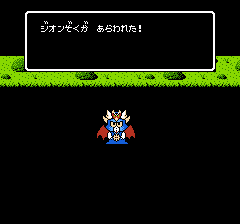
Dragon Baby ปรากฏตัว (ตัวอย่างจากเกมจริง)
เข้าเมือง Dragon Baby โจมตีเพื่อแก้แค้นที่เราฆ่าพ่อมัน Black Dragon
บอส: Dragon Baby (ドラゴンベビー) — 1200 EXP / 520 Gold
ง่าย ไม่ต้องอธิบาย
ข่าว: ไม้เท้าที่ Black Dragon ถือตกลงไปในถ้ำที่ไหนสักแห่ง · มีนักเต้นดังชื่อ Kara (キャラ) ต้องมีตั๋วเข้าโรงละครถึงจะดูได้ · ยังไม่มีอะไรทำ → ไปทางตะวันออกสู่หมู่บ้าน Mua (ムーア)
Mua (มัว)
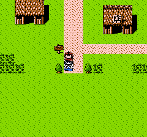
ทางเข้าหมู่บ้าน Mua (ตัวอย่างจากเกมจริง)
เข้าเมือง Kacricon (カクリコン) มาคุย “นายคงรู้จักฉัน” ตอบว่าไม่รู้จัก เขาเดินหนีอย่างขุ่นเคือง
มีประกวดความงามมุมขวาบนเมือง · ค้นพื้นมุมซ้ายบนของสวนด้านบนเมือง → ได้ Voting Ballot (とうひょうけん) ·
คุยชายชุดอวกาศที่เวทีประกวด เขาถามจะโหวตใคร ตอบ “ไม่” 2 ครั้งเพื่อโหวตหญิงด้านขวา → เธอให้ 5000 Gold (คนอื่นไม่ให้อะไร)
ข่าว: กระแสน้ำแปลกๆ ในทะเลพัดเรือหาย · ยักษ์ผ่านมาทางนี้
ออกเมืองลองข้ามสะพานตะวันออก GM Sniper โผล่มาบอกอาการราชาดีขึ้น → กลับ Lacroa พาเจ้าหญิงไปหา Alexander (บ้านปลายเหนือทะเลทราย) เขายอมให้เข้า เจ้าหญิงกลับปราสาท · ถามเรื่องยักษ์ เขาไม่รู้ ให้ไปถามปราชญ์ Sarasa (サラサ) ที่หมู่บ้าน Loom (ルウム) ทางตะวันออก · ค้นกล่องด้านขวา → ได้ Show Ticket (ショーのチケット) เข้าโรงละคร Granada ได้ (ยังไม่ต้องไปตอนนี้) · กลับ Lacroa เพิ่มสมาชิกคนที่ 4
Loom / Ruumu (ลูม)
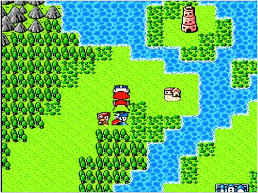
เข้าใกล้หมู่บ้าน Loom มองเห็นหอคอยอยู่ไกลๆ (ตัวอย่างจากเกมจริง)
ข่าว: มีดาบใน Fire Mountain · สมบัติศักดิ์สิทธิ์ 3 ชิ้น = Strength, Flame, Mist · Sarasa (คนที่มาหา) ถูกลักพาตัว
ค้นต้นไม้ตรงกลางหน้าโรงแรม → โน้ต “ตรงกลาง บนบ่อน้ำ ค้น” · ค้นช่องซ้ายบนสุดของบ่อน้ำกลางเมือง → ข้อความ “เตียงหมอดูที่แก่ที่สุด” · ค้นเตียงบนในบ้านมุมซ้ายบนของร้านไอเทม → วาร์ปไปหอคอยเหนือหมู่บ้าน
Loom Tower [sec4f]
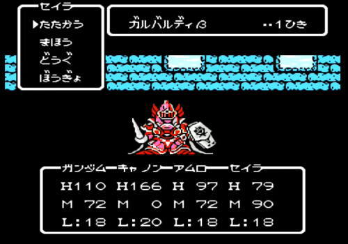
ฉากต่อสู้บอส Galbaldy Beta ตัวจริงในเกม
สมบัติ: Leopard Belt, Mega Pack, Magic Tile Mat, Medicine Box, Special Iron, Tactics Scroll
ทางเข้ามีทางแยก 3 ทาง: ซ้าย = Tactics Scroll · ขวา = Special Iron (เอาไปช่างตีเหล็ก Sento ได้แค่ Short Sword — เสียเวลา) · ตรง = ไปทางบอส ·
ได้ Leopard Belt (ひょうのベルト) ให้ “use” ในเมนูไอเทมเพื่อสวม → speed ของคนนั้น x2
ปีนขึ้นยอดเจอ Galbaldy (ガルバルディ) กำลังคุยกับใครบางคน “ส่ง Blue Crystal มา ฉันรู้ว่าเธอมี” Sarasa “ไม่มีวันส่งให้พวกแก!” เราเข้าไป Galbaldy โกรธที่ถูกขัดจังหวะ → สู้
บอส: Galbaldy Beta (ガルバルディBeta) — 1820 EXP / 1068 Gold
ยาก มีเวทดาเมจทั้งทีมแรงแบบ Black Dragon + ตีกายภาพแรง + ผนึกเวทเราได้ ·
ร่าย Minofus (ミノフス) ใส่มันกันร่ายเวท (มักหมดฤทธิ์หลัง 1 เทิร์น ต้องร่ายซ้ำเรื่อยๆ) · ใส่ Leopard Belt ให้คนร่ายเวทจะได้ร่ายก่อน Galbaldy ·
ร่าย Hover (ホバー) เพิ่ม speed ทีม (มันพลาดบ่อยขึ้น) · Fimul / Hanikam ช่วยได้เล็กน้อย · สุดท้ายต้องดวง · เลเวลราว 15–17
ชนะแล้ว Sarasa กลับหมู่บ้าน จะเล่าทุกอย่างที่นั่น → กลับ Loom
Sarasa อยู่บ้านมุมซ้ายบนของ Loom เล่าเรื่องยักษ์: มันถูกปลุกในดินแดนนี้เมื่อนานมาแล้วตอนสงครามใหญ่ระหว่าง 2 ดินแดน แต่ยักษ์ทำลายทั้งสองแล้วกลับไปหลับ · จะคุมยักษ์ต้องมีคริสตัลแดง+น้ำเงิน · Zeon มีคริสตัลแดงและปลุกยักษ์แล้ว ถ้าได้น้ำเงินจะใช้ยักษ์ทำลาย Lacroa ทั้งหมด · ขอให้เอา Blue Crystal มาให้ — อยู่ในโรงละคร Granada มุมขวาล่างของห้อง
ไป Granada เข้าโรงละคร (มีตั๋ว) ค้นมุมขวาล่าง → เจอเศษกระดาษ “สายไปแล้ว Blue Crystal เป็นของ Zeon แล้ว” — Zeon แอบฟังบทสนทนาก่อนหน้า · กลับ Loom คุย Sarasa → เขาทำแพให้ไป Lunatsu (ルナツー)
Lunatsu (ลูนาทู)
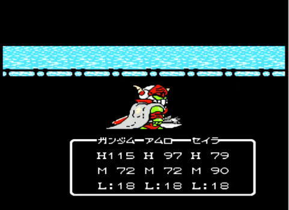
Guncannon ถูกวิญญาณ Black Dragon สิงกลายร่าง (ตัวอย่างจากเกมจริง)
บนแผนที่มีแพข้าง Loom ขึ้นแพ กระแสน้ำแรงพัดพาไปทันที ตื่นในบ้านชายคนหนึ่งที่ช่วยเราไว้ เขาอยากนั่งเรือไป Lunatsu แต่มอนสเตอร์เยอะ ขอไปด้วย ตอบ “yes” เขาบอกความลับตอบแทน: หลัง Gallop Tower มีถ้ำที่มี Dragon Staff
ขึ้นแพ Guncannon ดูผิดปกติ “ฉันไม่ใช่ Guncannon ฉันคือวิญญาณของ Black Dragon ที่พวกแกทำลาย จะฟื้นได้ต้องมี Dragon Staff รู้ตำแหน่งแล้วจากบทสนทนาเมื่อกี้ ไม่ต้องการพวกแกอีก ตายซะ!”
บอส: Cannon (キャノン) — 1740 EXP / 1000 Gold
ง่ายมาก
หลังสู้ Guncannon กลับสติ · ถึง Lunatsu ชายที่พาไปจากไป · ค้นหญ้าน่าสงสัยเหนือโรงแรม → ได้ Wounded Hat (きずついたハト) ·
บ้านมุมซ้ายบน = Carddass club (20 Gold เข้า) มีโหมด survival ชนะ 6 คนได้ 1000 Gold (ไม่ค่อยคุ้ม)
บ้านกัปตันเรือ (Ship Captain's House)
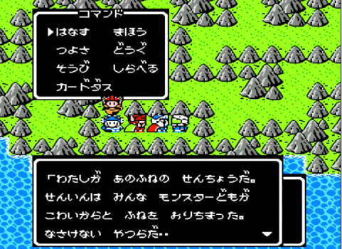
กัปตันเรือเล่าว่าลูกเรือทิ้งเรือหนีเพราะกลัวมอนสเตอร์ (ตัวอย่างจากเกมจริง)
ไปทางเหนือจาก Lunatsu เจอบ้านกัปตันเรือ · คนส่วนใหญ่ย้ายไปภูเขาเพราะแล่นเรือไม่ได้ ·
ไปทางตะวันออกเจอเส้นทางลัดเลาะภูเขาเป็นเขาวงกต ในนั้นเจอกัปตันเรือ ลูกเรือลาออกเพราะมอนสเตอร์โจมตีกลางทะเล เขาบอกให้ยอมแพ้ · ตอบ “no” หลายครั้ง เขาจะประทับใจความกล้าแล้วให้ยืมเรือ → กลับ Lunatsu ขึ้นเรือ
ปลุก Strength Shield
แล่นเรือไปทางตะวันตกจาก Lunatsu สู่เกาะที่มีบ้าน (ใต้ทะเลทราย Granada) คุยชายในบ้าน → ปลุก Strength Shield ป้องกัน 15 → 30
Fire Mountain [sec4g]
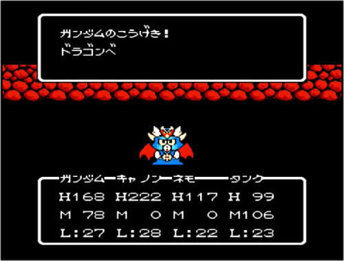
ต่อสู้ Dragon Baby ใน Fire Mountain (ตัวอย่างจากเกมจริง)
สมบัติ: Iron Axe, Defense Water, Strength Water, Speed Water, Silver Powder, Magic Rope, Flame Sword, Certain Kill Sword
ในเทือกเขาทางตะวันออกของ Lunatsu (ที่เจอกัปตันเรือ) มีภูเขาสีเพี้ยนที่มุมตะวันออกเฉียงใต้ เข้าไป · จะเจอ Dragon Baby บอกให้กลับไปเพราะ Flame Sword ไม่ได้อยู่ที่นี่ (โกหก) · มีพื้นกับดักดาเมจ 10 HP/คน ·
ลึกๆ เจอชาวเมืองบอกว่า Dragon Baby ตัวหนึ่งโกหกและถือดาบไว้ — ตัวนั้นอยู่บันไดทางใต้ของบันไดที่ขึ้นมาเจอชาวเมืองคนนี้ · ไปยั่ว Dragon Baby ตัวนั้น → สู้
บอส: Dragon Baby (ドラゴンベビー) — 1200 EXP / 520 Gold
ง่ายมาก แต่ต้องชนะ 3 ครั้ง · ชนะแล้วมันหายไป เปิดหีบได้ Flame Sword
ตอนนี้มีสมบัติศักดิ์สิทธิ์ 2 ใน 3 ชิ้น
Lia (เลีย)
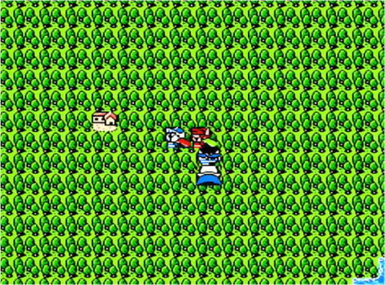
เดินทางเข้าใกล้หมู่บ้าน Lia (ตัวอย่างจากเกมจริง)
เดินไปทางตะวันออกจาก Lunatsu สู่หมู่บ้าน Lia · มุมขวาบนเมืองเจอ Layla (ライラ) ขอความช่วยเหลือ · คนข้างๆ ชื่อ Messalar (メッサーラ) จำเราได้ว่าเป็น Knight Gundam แล้วขอถอยไปก่อน · Layla บอกเห็นยักษ์ในถ้ำทางเหนือ → ไปทางเหนือสู่ถ้ำ
ถ้ำเหนือ Lia [sec4h]
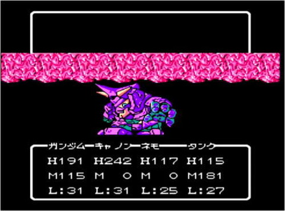
ฉากต่อสู้บอส Mad Golem ตัวจริงในเกม
สมบัติ: Silence Helmet, Mirror Shield, Ointment, Mist Armor
ลึกในถ้ำ เหยียบหีบสมบัติ Mad Golem เข้ามา “พวกโง่! ยักษ์ในตำนานไม่ได้อยู่ที่นี่!” Gundam “เวร! กับดัก!”
บอส: Mad Golem (マッドゴーレム) — 5959 EXP / 102 Gold
ไม่แย่ · มีเวท Net ลดป้องกันมันได้ · ตีกายภาพได้ผลดี · ชนะเปิดหีบได้ Mist Armor (สมบัติศักดิ์สิทธิ์ชิ้นสุดท้าย)
กลับ Lia ศัตรู 2 ตัวเข้ามา
บอส: Layla (ライラ) + Messalar (メッサーラ) — 3806 EXP / 2750 Gold
ฆ่า Messalar ก่อน (ป้องกัน/HP ต่ำกว่า) · คริติคอลช่วยจบไว ไม่งั้นอาจต้องลองหลายรอบ · ลอง “Focus” เพื่อเก็บ Messalar เร็วๆ
หลังสู้ ไปบ้านมุมขวาบนเมือง ค้นกล่องมุมขวาบน → ได้ Precious Pot (きちょうなつぼ)
อีเวนต์เสริม: มีงานกีฬาเริ่มที่มุมซ้ายบนของ Lia มีคนอยากได้ลายเซ็น Kara → ไป Granada คุย Kara ได้ Kara's Autograph (キャラのサイン) กลับมาคุยชายกลางบนลู่วิ่ง → แลกได้การ์ด Carddass ครบชุด 1–83
Akshiz (อักซิส)
เดินไปทางตะวันตกจาก Lia · Kacricon (คนที่เราเคยว่า “ไม่รู้จัก”) มาถามว่ารู้จักหรือยัง ตอบ “no” → สู้
บอส: Kacricon (カクリコン) — 1200 EXP / 682 Gold
น่ารำคาญเพราะฮีลตัวเองเต็มซ้ำๆ · ถ้าเลเวลต่ำต้องอดทน · ร่าย Minofus กันมันฮีลได้ · ถ้าฆ่าไม่ทันควรอัปเลเวล/ซื้อของดีขึ้น
ข่าว: เทพเจ้าทะเลอยู่เกาะเล็กทางใต้เมือง · หมู่บ้านเล็กชื่อ Noa อยู่ในป่าทางเหนือ (หลงง่าย) · เด็กด้านซ้ายเมืองชวนเล่นซ่อนหา ตอบ “yes” ทั้งเมืองหายไป (ออก-เข้าเมืองใหม่ทุกคนกลับมา) ·
ถ้ามี Precious Pot ชายในบ้านมุมซ้ายล่างเมืองจะขอ → แลก Compass (コンパス) เข้าป่าเหนือได้โดยไม่หลง
ป่าเหนือ (North Forest)
ถ้าลองเข้าป่าเหนือ Akshiz Gold Knight ขวางไว้ · ถ้ามี Compass เขาจะให้เข้า แต่ต้องชนะเขาก่อน
บอส: Gold Knight (おうごんのナイト) — 2962 EXP / 1300 Gold
ชอบฮีล HP ตัวเองเต็ม → ร่าย Minofus ผนึกเวทมัน · นอกนั้นไม่ยาก
ชนะแล้ว Gold Knight ให้เข้าป่าและขอให้ไปปราบยักษ์
Noa (โนอา)
เข้าหมู่บ้านในป่า Noa · GM Sniper บอกลูกของ GM Henson หลงอยู่ในป่า · ข่าว: คนชื่อ Makube (マクベ) กำลังคุมยักษ์ · ยักษ์อยู่ Stone Castle ทางเหนือ · Pegasus ในตำนาน · Forest of Bewilderment อยู่ทางตะวันออก มี Bow of Light อยู่ในนั้น ·
หญิงบนเกาะเล็กกลางเมืองรอให้ใครส่ง Wounded Hat ที่อาจเจอใน Lunatsu → ให้ Card #43 แลก
ไปทางตะวันออกสู่ Forest of Bewilderment เพื่อช่วยลูก Henson (ทางเข้าอยู่ที่ช่องเขาทางตะวันออก)
Forest of Bewilderment (ป่าลวงตา) [sec4i]
ดันเจียนวนลูป · ทางแยก 3 จุดแรกให้เดิน: ขึ้น, ซ้าย, ขึ้น · เจอนางฟ้า Kikka บอกว่ามีเด็กเดินหลงอยู่ ·
จากนั้นเดิน ขึ้น แล้วเลี้ยว ซ้าย ที่ทางแยก 3 จุดถัดไป → เจอ Kikka อีกครั้ง · จากนั้น ลง, ลง, ขวา → เจอลูก Henson พากลับหมู่บ้าน Noa
ที่หมู่บ้าน GM Henson ขอบคุณ บอกจะกลับ Sento (ปราสาท Lacroa กำลังสร้างใหม่) · ลูกเขาเจอธนูในป่า ให้เราเป็นการตอบแทน (อยู่บนเตียงในโรงแรม) + ฝาก Henson's Letter (ヘンソンのてがみ) ไปส่งที่ Grips (グリプス) ·
เข้าโรงแรมค้นเตียงขวาบนสุด → ได้ Bow of Light (ひかりのゆみ) + Henson's Letter
ปลุกสมบัติศักดิ์สิทธิ์ให้ครบ (Becoming the Complete Hero)
เหมือน Strength Shield — ปลุกอีก 2 ชิ้นได้:
- Mist Armor: แล่นเรือไปทางตะวันตกของ Augusta เยี่ยมบ้านที่นั่น
- Flame Sword: แล่นใต้จาก Lunatsu ไปบ้านเล็ก (หลังที่ 2 ที่เห็น) บนเกาะรูปดาบ คุยชายชรา → ปลุก Flame Sword แล้วมีคัทซีนตัวละครแข็งแกร่งขึ้นมาก (เพราะปลุกสมบัติครบ 3) · คุยเด็กในบ้านเดียวกัน → ได้ Guidance Flute (みちびきのふえ) ช่วยผ่านถ้ำนอกเกาะได้ง่าย
ไปทางตะวันตกเล็กน้อยสู่ถ้ำบนเกาะเดียวกัน · เข้าถ้ำ Guidance Flute จะเล่นเอง เห็นทางผ่านแผงที่กระพริบ ตามไป (ระวังแสงวูบวาบ) · ปลายทางเปิดหีบ → ได้ Hero's Proof (ゆうしゃのあかし)
เทพเจ้าทะเล (Sea God)
บ้านอยู่ทางใต้ของ Akshiz · ไปยากเพราะกระแสน้ำแรงพัดเรือ เว้นแต่เลียบชายฝั่งตลอด → เทเลพอร์ตไป Akshiz ขึ้นเรือ เลียบฝั่งอย่างระวังจนถึงบ้าน · ชายชราเห็น Hero's Proof → หยุดกระแสน้ำ แล่นเรืออิสระได้แล้ว
ไปทางตะวันตกเฉียงเหนือออกทะเลเปิด แล้วขึ้นเหนือ เจอเกาะที่มีบ้านตรงกลาง → ชายชราให้ Pegasus Wing (ペガサスのはね) ใช้เรียก Pegasus บินรอบแผนที่โลก · ตอนนี้เข้าเมือง Grips ได้ (ตะวันตกเฉียงเหนือของ Augusta)
Grips (กริปส์)
บ้านข้างทางเข้า ส่ง Henson's Letter ให้ชายชรา → ได้ Mirror of Truth (しんじつのかがみ) · พอรับมา มีข้อความ “เมื่อแสงตัดกับแสง พลังของยักษ์จะลดลงครึ่งหนึ่ง” · GM Sniper โผล่มา “ได้ยินแล้ว น่าจะหมายถึง Arrow of Light ฉันจะไปหามันเดี๋ยวนี้ แล้วเจอกันที่ Stone Castle”
หญิงในโรงแรมจะเล่าเรื่องหมู่บ้านในฝัน Moonmoon (ムーンムーン) หลังปราบยักษ์ · ถ้ำทางตะวันตกยังผ่านไม่ได้ · Lithograph ทำให้แข็งแกร่งมาก · ไปทางใต้จาก Grips เข้า Stone Castle ที่อยู่ของยักษ์
Stone Castle [sec4j]
สมบัติ: Almighty Staff, Spirit Sword
ศัตรูค่อนข้างแรง อาจต้องอัปเลเวลนิดหน่อย (Exp เยอะ เลเวลไว) · บอสไม่ยากมาก ลุยไป (หนีบ้างก็ได้) จนเจอ Makube (マクベ) เขาหนี ไล่ตามแล้วตกหลุมที่มียักษ์ · GM Sniper โผล่มาให้ Arrow of Light (ひかりのや) ใช้แล้วร่างยักษ์เล็กลงครึ่งหนึ่ง → ถึงเวลาสู้ยักษ์
บอส: Great Golem (サイコゴーレム) — 11362 EXP / 2010 Gold
ค่อนข้างง่าย · แค่ตีและฮีล
บอส: Makube Kattse (マクベ カッツェ) — 10000 EXP / 1000 Gold
ไม่ยากมาก · เลเวลราว 24–27 · ใช้ “Focus” เป็นหลัก
ปราบ Makube แล้วเขาบอก Zeon ยังไม่จบ ยังมี Zeek Zeon (ジーク ジオン)
Moonmoon (มูนมูน)
กลับ Grips คุยหญิงที่สัญญาจะบอกเรื่อง Moonmoon → เธอบอกให้ไปเกาะเล็กทางใต้แล้วค้นทะเลสาบ · ค้นทะเลสาบ → วาร์ปไปบ้าน · ออกมาเดินตะวันออกเฉียงใต้เล็กน้อยสู่ Moonmoon (มีแค่บ้านหลังเดียว) → ได้ Lithograph shard ชิ้นที่ 2 รวมกับชิ้นแรกเป็น Lithograph (せきばん) · Gundam “use” ในเมนูไอเทมเพื่อสวม → str/def พุ่งขึ้นมาก
ถ้ำ Grips (Grips Cave)
คุยชายหน้าบ้านมุมซ้ายบนของ Grips เขาให้เข้าบ้านได้ · ชายชราข้างในเปิดอุโมงค์ลับใต้ดิน · ในอุโมงค์ Kacricon มาถามอีกว่ารู้จักหรือยัง — ตอบ “yes” เขาเดินจากไป, ตอบ “no” เพื่อบอสง่ายๆ + Exp ดี
บอส: Kacricon (カクリコン) — 3600 EXP / 1966 Gold
ง่ายมาก
เดินต่อในถ้ำ เจอทางแยกที่ดูตัน ให้เลือกทางที่ลงล่าง → ออกมาข้างปราสาท เข้าปราสาท
Final Castle [sec4k]
สมบัติ: Monster Killer, Spirit Ball
ไม่มีการสุ่มเจอศัตรูในปราสาทนี้ ค่อยๆ ลุย · จะมีบอสเก่าๆ ที่เคยปราบมาขวาง สมาชิกที่ฝากไว้ที่ปราสาทโผล่มาช่วยกันไว้ให้เราเข้าไปหา Zeek Zeon · แต่ Black Dragon สกัดไว้ → สู้กับมันแทน
บอส: Black Dragon (ブラックドラゴン) — 0 EXP / 0 Gold
เวทแรง แต่ถ้ามันไม่ใช้บ่อยก็รอด · นี่คือบอสสุดท้ายจริง ปล่อยเวท/ไอเทมได้เต็มที่ · Gundam แรงมากแล้ว ตีทุกเทิร์น ฮีลเมื่อจำเป็น เดี๋ยวมันก็ล้ม
ตอนจบ
Zeek Zeon หนีไป สันติภาพกลับสู่ Lacroa · กลับปราสาท ทุกคนโห่ร้องให้ · แต่ Gundam บอกการเดินทางยังไม่จบจนกว่า Zeek Zeon จะตาย จึงออกจากปราสาทเริ่มการผจญภัยครั้งต่อไป (ปูเรื่องภาคต่อ)